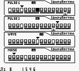
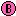
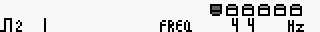
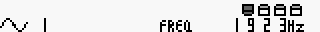

main screen

cursor moves
 sound on
sound off
+/+ change advance direction(forward,reverse,random)
+ tone edit
+ return
+ tone parameter copy
+ tone parameter paste
+ laststep on
+ laststep off
+/+ laststep moves
++(with laststep on) one line returns to a head
++(with laststep on) all lines return to a head
+(with laststep on) mad laststep on(randamize laststep)
+(with laststep on) mad laststep off
+
pulse1
/ button changes
+/+/+/+ parameter changes
freq(44Hz-2015Hz)
display by the scale(C3-B8)
env1
env2
env3
duty
snd1
snd2
snd3
out
pulse2

/ button changes
+/+/+/+ parameter changes
freq(44Hz-2015Hz)
display by the scale(C3-B8)
env1
env2
env3
duty
out
wave

/ button changes
+/+/+/+ parameter changes
freq(44Hz-2015Hz)
display by the scale(C3-B8)
oplv
slns
out
noise
/ button changes
+/+/+/+ parameter changes
nzp1
nzp2
nzp3
env1
env2
env3
out